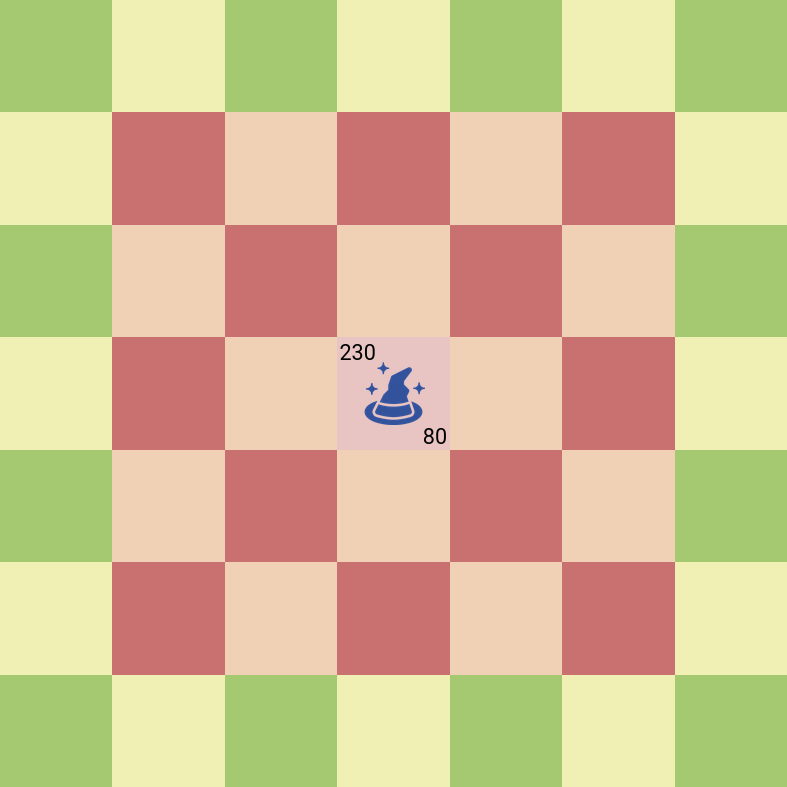

Units¶
Units have 2 numbers above them. The left one is their health points(when this number becomes less than or equal to 0, the unit is removed from the game) and the right one is their ability points.
King¶
HealthPoints: 200
AbilityPoints: 30
Ability: Single target damage.
Movement range:

Ability range:

Warrior¶
HealthPoints: 600
AbilityPoints: 100
Ability: Single target damage.
Movement range:

Ability range:
Mage¶
HealthPoints: 300
AbilityPoints: 80
Ability: AOE damage. If mage hits an enemy unit, all neighbouring enemy units also receive damage.
Movement range:
Ability range:
Assassin¶
HealthPoints: 20
AbilityPoints: 200
Ability: Single target damage.
Note: Assassin can jump over other units, unlike Warrior and Pawn, who can’t move forward 2 squares if any unit is blocking their path.
Movement range:

Ability range:

Pawn¶
HealthPoints: 300
AbilityPoints: 0
Ability: Create/destroy a Wall(their own or enemy’s).
Movement range:
Ability range:

Wall¶
HealthPoints: 100
AbilityPoints: 0
Walls have no abilities and they can’t move.